Zapnutý spotrebič len ikonou
Piate kolo (25. 11. 2026). Zapnutie povie len kruh s ikonou, dlaždica je bez obrysu, deň v páse 4 dní bez zmeny.
Namiesto zelenej a oranžovej je farba, ktorá ladí so živou oblohou: tá istá, akou svieti ikona aktívnej karty v
navigácii (--s4, appka ju počíta zo spodku oblohy). Cez deň je modrastá, v noci sivostrieborná, pri západe
slnka teplejšia. Platí pre všetky spotrebiče aj auto. I4 je navyše stály plný modrý kruh.
Obrázky sú snímky skutočnej appky so štýlom variantu; práčku som označil ako bežiacu a auto ako nabíjané len na ukážku (v testovacích dátach nebeží nič). Súmrak ani zamračenú oblohu som nesnímal – fixtures majú len jasný deň.
F1 so žiarou a bez (26. 11. 2026)
Biely kruh s tmavou ikonou, ako je teraz v appke – hore bez žiary, pod ním so žiarou (biela, 16 px). Snímky zo skutočnej appky; práčka beží a auto sa nabíja len na ukážku. Zamračené som nasimuloval: oblačnosť 100 % a výroba asi na pätine, preto má práčka iný čas a auto 0 km.
Deň 13:00
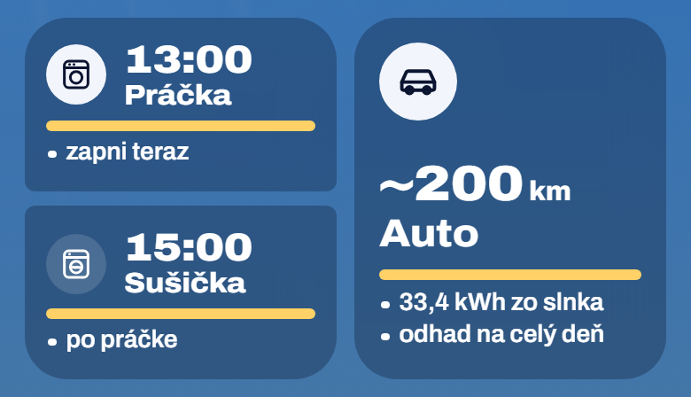
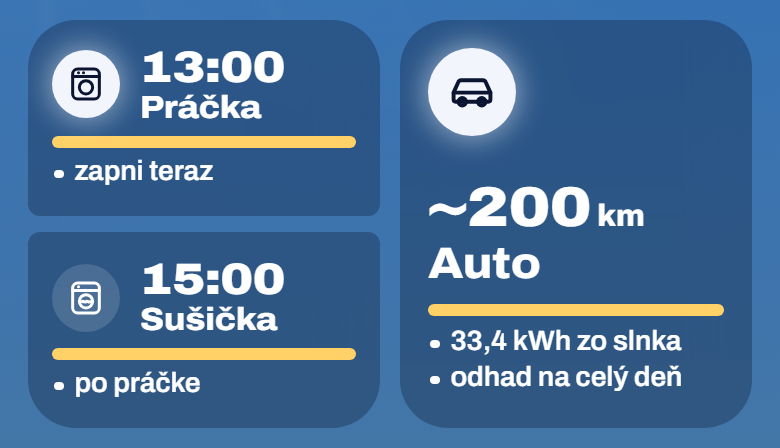
Súmrak 19:35
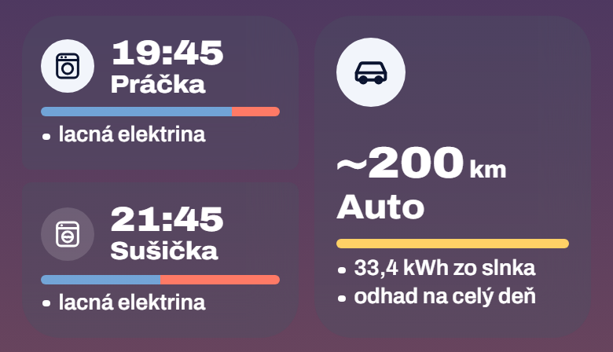
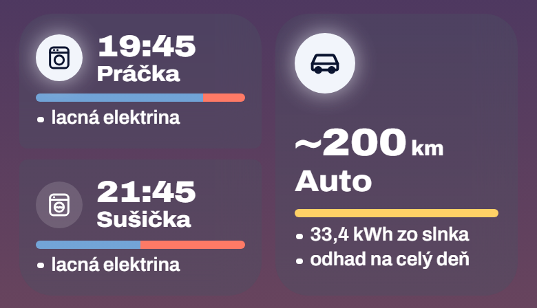
Noc 21:30
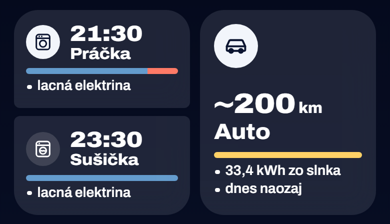

Zamračené 13:00
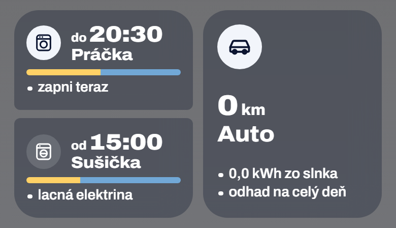
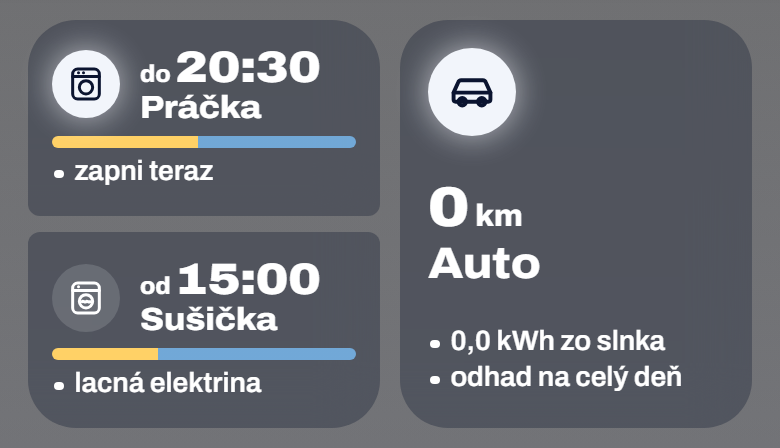
Rozhodnuté 26. 11. 2026: F1 so žiarou, pri bojleri bez značky, kto ho riadi.
- So žiarou kruh „svieti“ – najviac to vidno v noci a pri súmraku, na sivej oblohe je rozdiel najmenší.
- Žiara kruh opticky zväčší, cez deň na modrej oblohe pôsobí trochu rozmazane.
Ôsme kolo: modrý prstenec na bielom kruhu (26. 11. 2026)
Výplň kruhu je biela ako dnes, okolo nej modrý prstenec #7cc4ff; každý variant bez žiary a so žiarou. V N1
je modrá aj ikona – svetlá modrá appky by na bielej zanikla, preto je ikona v tmavšej modrej #2f8ee0. V N2
ostáva ikona tmavá ako dnes. Značka, kto riadi bojler, chýba vo všetkých. Snímky zo skutočnej appky o 13:00, bojler
hreje, práčka je označená ako bežiaca len na ukážku.
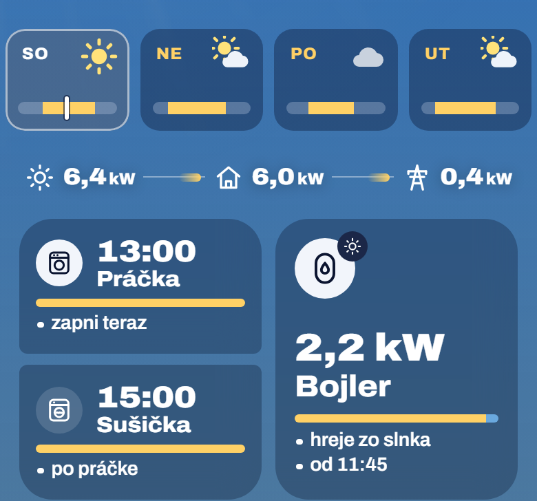
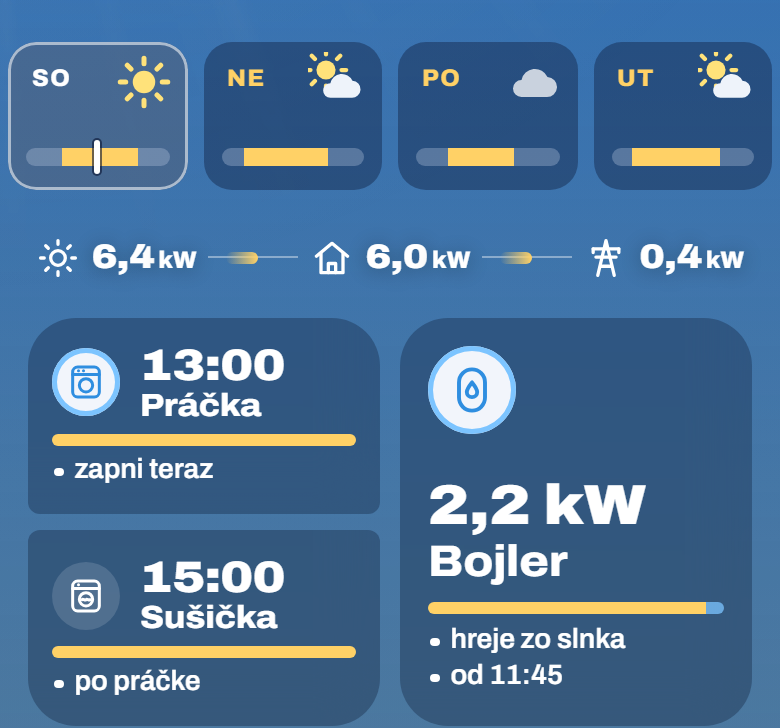
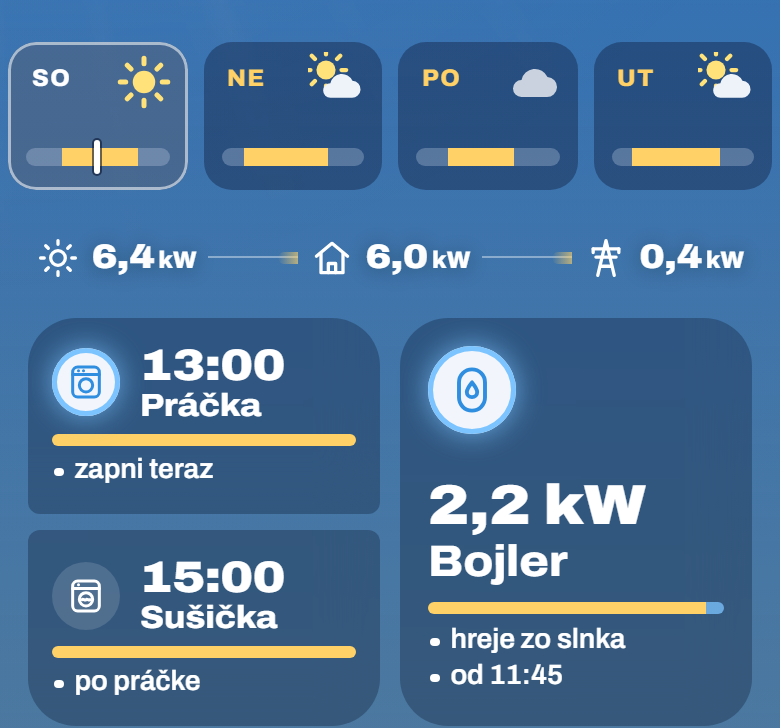
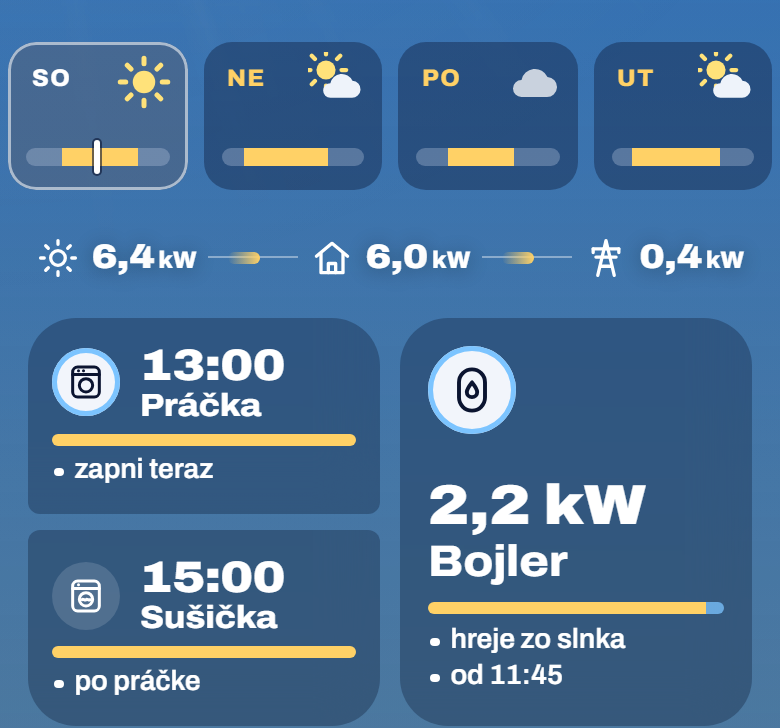
- Celý kruh hovorí jednou farbou: modrý obrys aj ikona.
- Modrá ikona na bielej je menej kontrastná ako tmavá, pri malom kruhu v dvojici je jemnejšia.
- Najčitateľnejšia ikona, oproti dnešku pribudne len modrý okraj.
- Modrá je len tenký prstenec, zapnutie nesie hlavne biela výplň.
- Kruh pôsobí rozsvietený, na tmavom skle v noci ešte viac.
- Kruh opticky zväčší (to ti predtým prekážalo) a modrá sa v žiare rozleje.
Neprešlo (vybrané F1 so žiarou). Odporúčal som N2 bez žiary – najčitateľnejšia ikona, kruh rovnako veľký ako vypnutý a modrý okraj zapnutie spresní.
Siedme kolo: modrý prstenec (26. 11. 2026)
Kruh ostane priesvitný ako pri vypnutom, zapnutie povie modrý prstenec okolo neho (modrá appky #7cc4ff). V
M1 je modrá aj ikona, v M2 ostane biela. Pri bojleri chýba značka, kto ho riadi (ruka / slnko na kraji kruhu) – podľa
tvojho zadania ju odstránim v každom variante. Snímky sú zo skutočnej appky o 13:00, bojler hreje a práčku som označil
ako bežiacu len na ukážku. Noc som nesnímal – v testovacích dátach s bojlerom je len deň.
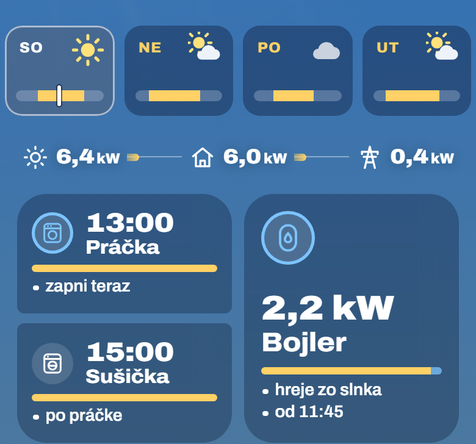
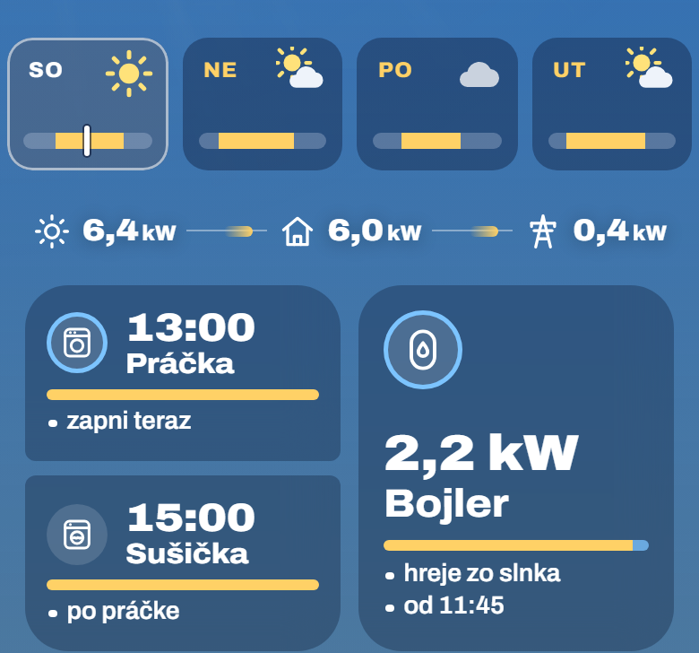
- Zapnutie je čitateľné dvakrát (obrys aj ikona), vidno ho aj na malom kruhu v dvojici.
- Modrá je v appke farba lacnej siete (pásik, pole toku) – modrá ikona nad modrým pásikom môže mýliť.
- Najtichšie, ikona ostáva biela ako všetok text na skle.
- Rozdiel je len tenká čiara – na prvý pohľad slabší ako M1 aj ako dnešný biely kruh.
Neprešlo. Odporúčal som M1, ak má byť modrá – zapnutie je jasné aj v dvojici. Rozhodneš ty – kým si nevyberieš, v appke nič nemením.
Šieste kolo: stále farby
Jedna farba na celý deň, rovnaká pre všetky spotrebiče aj auto, s tmavou ikonou a tou istou žiarou ako I2. Vybral som farby, ktoré sa s modrou dennou, ružovou súmračnou aj tmavou nočnou oblohou neperú a nemajú v appke iný význam: zelená (slnko stačí), modrá (lacná sieť), červená (drahá sieť) a zlatá (slnko v pásiku) sú obsadené. Snímky sú zo skutočnej appky o 13:00, 19:35 (súmrak) a 21:30.
Je zapnutá ikona väčšia? Nie. Zapnutý aj vypnutý kruh má presne 44 px (v dvojici 34 px) a ikona 26 px (20 px) – zmerané v appke. Väčšia sa zdá, lebo je plná a svetlá (svetlá plocha na tmavom pozadí pôsobí väčšia ako rovnako veľká tmavá) a žiara siaha ešte asi 8 px za kruh. Porovnaj „Farba oblohy“ a „bez žiary“ – bez žiary vyzerá kruh rovnako veľký ako vypnutý.
Farba oblohy (dnes v PR, I2) mení sa s oblohou: modrastá, ružová, strieborná
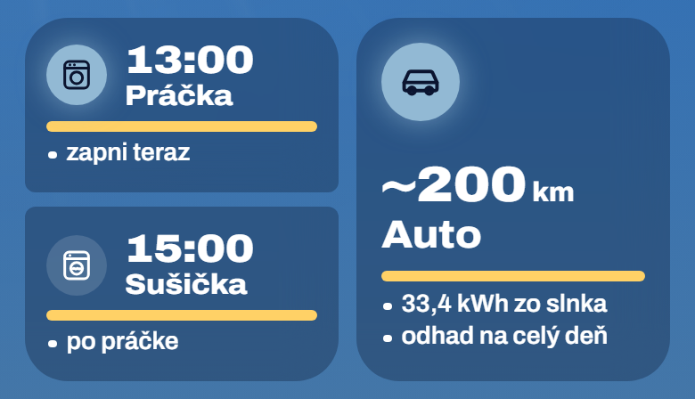
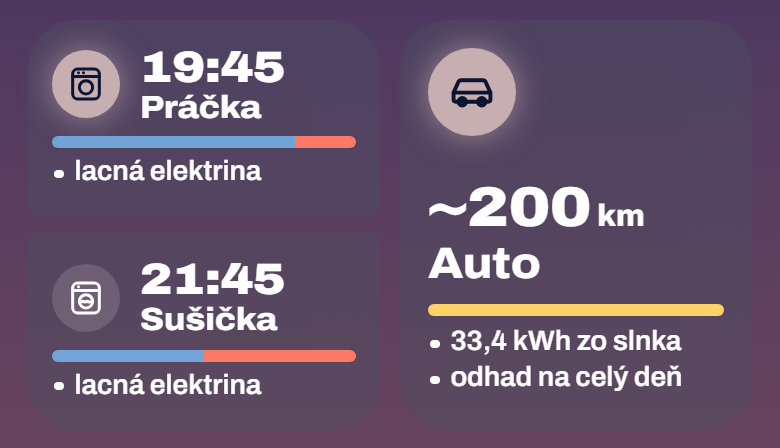
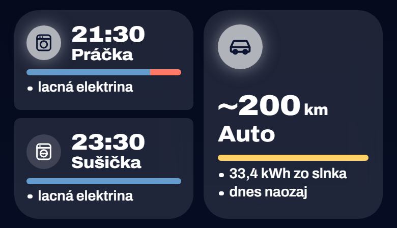
Farba oblohy bez žiary na porovnanie veľkosti
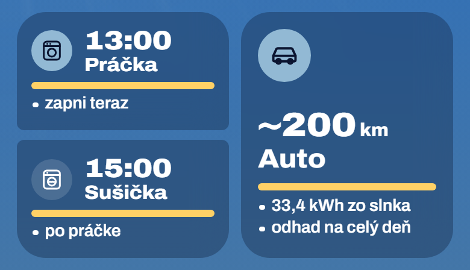
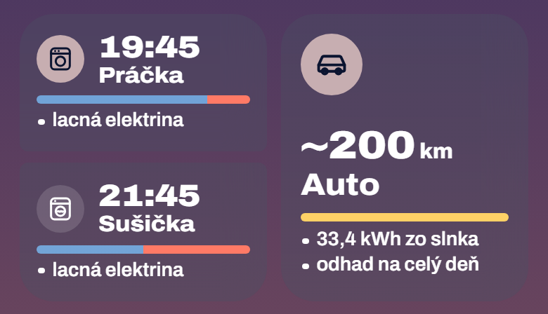
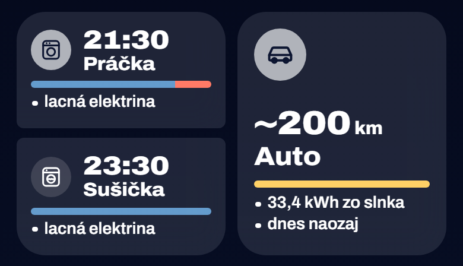
F1 · Biela #f2f5fb


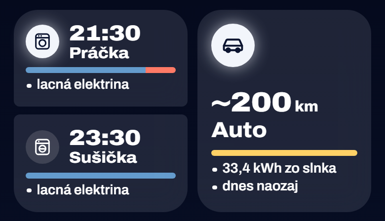
F2 · Krémová (svetlo v okne) #ffe2a6
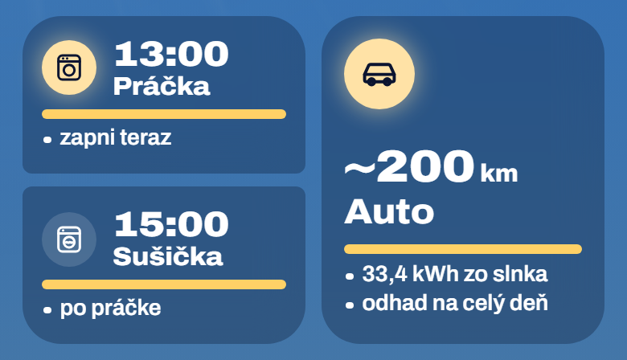
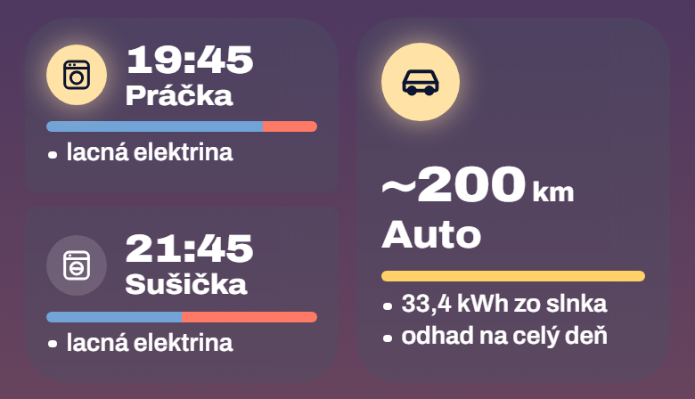
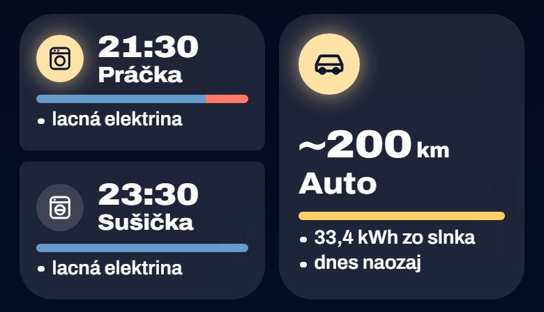
F3 · Svetlá tyrkysová #8fe0e6
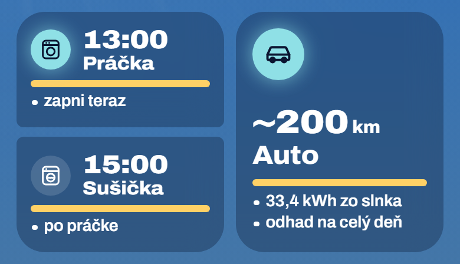
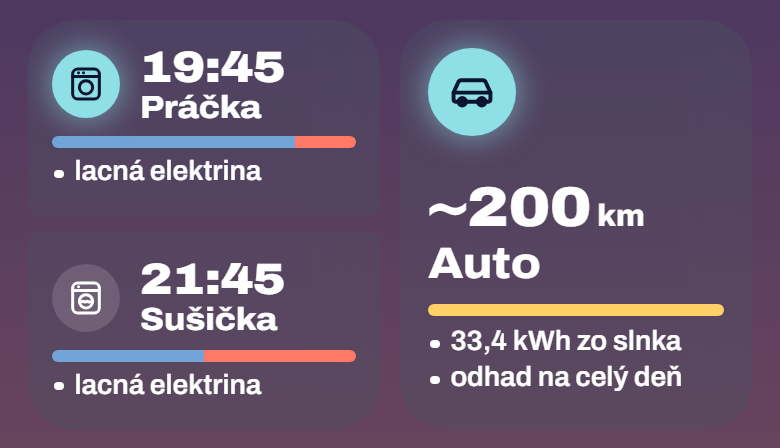
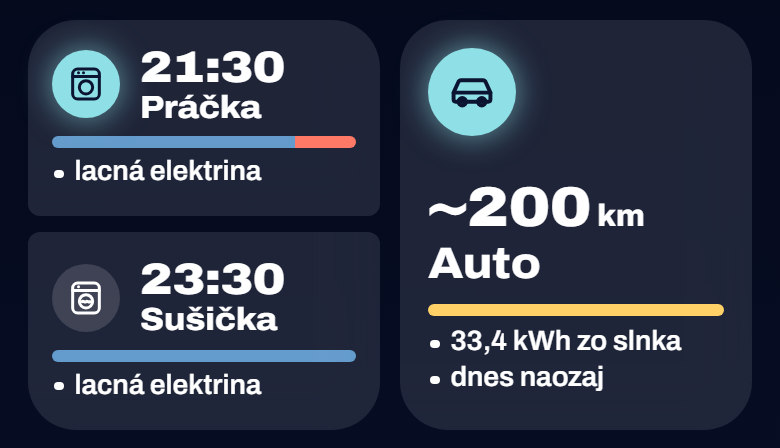
F4 · Levanduľová #c6b8ff
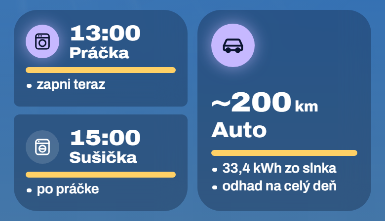
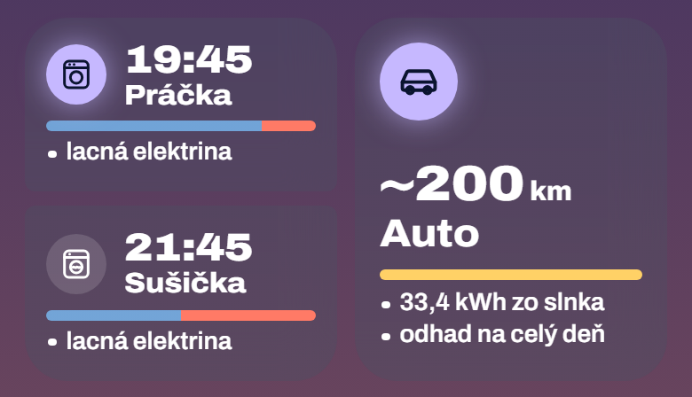
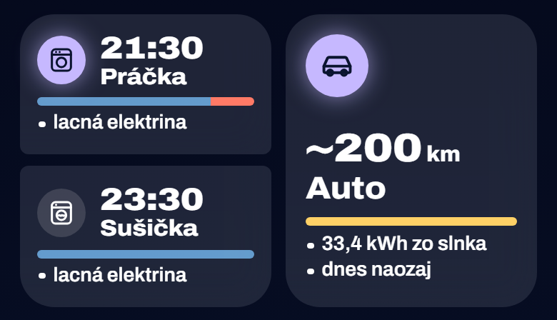
- Neutrálna, sedí k bielemu textu a ku každej oblohe; „svetlo zapnuté“.
- Vypnutý kruh je tiež biely (priesvitný) – rozdiel je len v plnosti, nie vo farbe.
- Teplá ako svetlo v okne domu, v noci a pri súmraku najútulnejšia.
- Blízko zlatej slnka v pásiku – môže pôsobiť ako „ide zo slnka“.
- Svieža, v noci výrazná, s dennou oblohou ladí (susedná farba).
- Cez deň blízko modrej oblohy aj modrej lacnej siete v pásiku.
- V appke nemá žiadny iný význam; s modrou oblohou ladí, so súmrakom a nocou splýva farebne, nie jasom.
- Zreteľná vo všetkých troch časoch.
- Najmenej „vypínačová“ farba, treba si na ňu zvyknúť.
Rozhodnuté 25. 11. 2026: F1 · biela bez žiary. Pôvodne som odporúčal F4 · levanduľovú: jediná je zreteľná cez deň, pri súmraku aj v noci a nič iné v appke neznamená. Ak chceš najneutrálnejšie riešenie, F1 bielu. Žiaru by som v každom prípade zmenšil alebo vypustil, ak ti kruh pôsobí priveľký. Rozhodneš ty – kým si nevyberieš, v PR nič nemením.
Cez deň


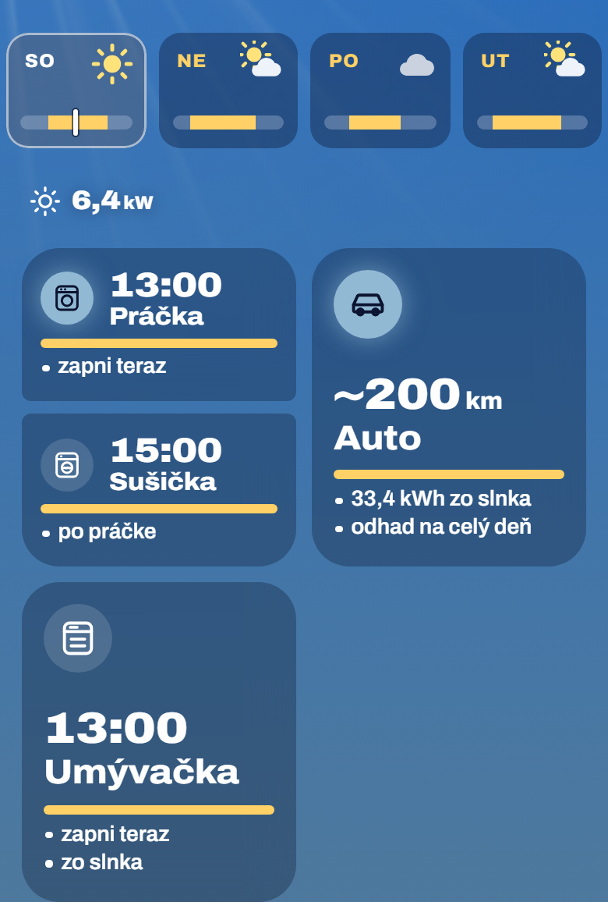

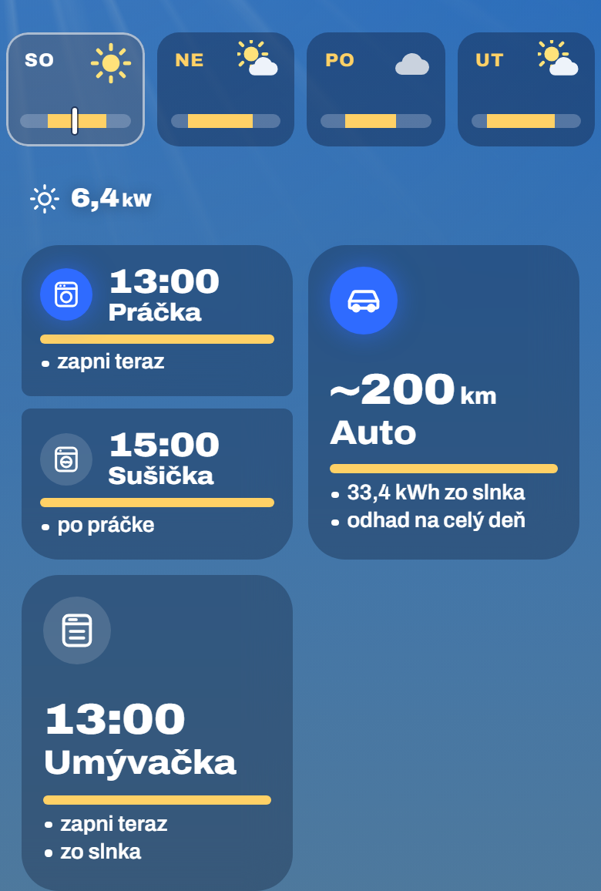
V noci


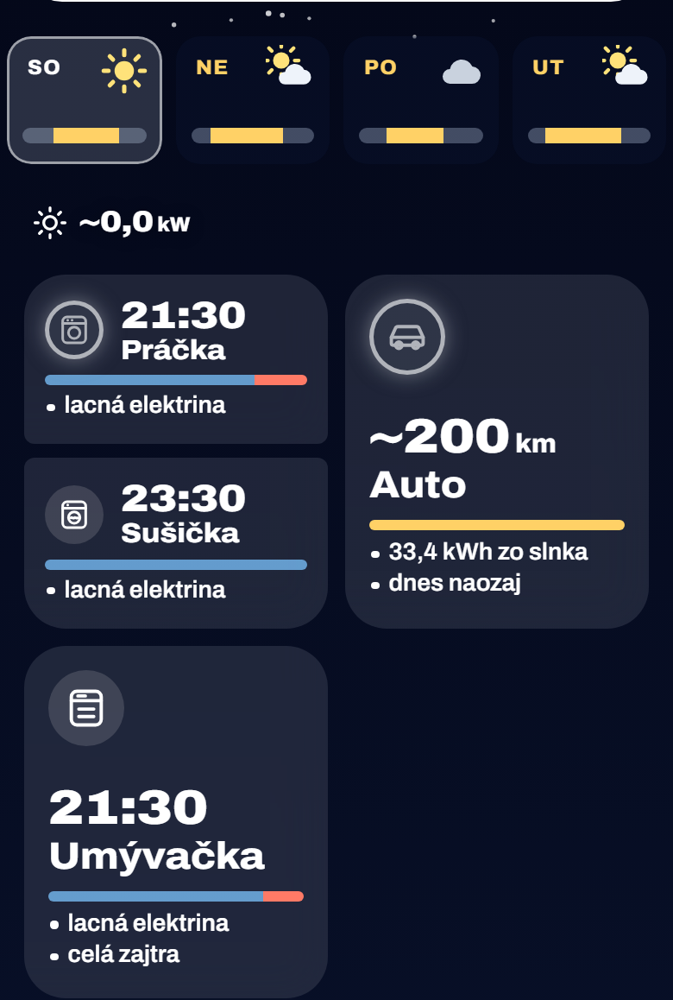

Porovnanie
- Najjemnejšie, celkom splynie s oblohou.
- Tenká svetlá čiara sa od bielej vypnutej ikony takmer nelíši – na prvý pohľad slabé.
- Zreteľné cez deň aj v noci: svetlý plný kruh proti priesvitným kruhom vypnutých.
- Ladí s navigáciou – aktívna karta a zapnutý spotrebič „svietia“ rovnako.
- V noci je farba sivostrieborná, menej „živá“ ako cez deň.
- Ako LED krúžok okolo vypínača, ľahké.
- Slabšie ako I2; na kraji kruhu sa bije so značkou ruka / slnko pri bojleri.
- Najvýraznejšie a vždy rovnaké – cez deň, v noci aj pri západe.
- Modrá v appke znamená lacnú sieť (pásik); modrý kruh nad modrým pásikom môže mýliť.
- S oblohou neladí, pri západe slnka bude jediná studená farba v karte.
Spoločné pre všetky: auto sa už nelíši od spotrebičov (oranžová bola „asi“). Texty v paneli Auto ostávajú s „asi“, takže odhad je povedaný slovami.
Najprv zvolené I2, potom nahradené stálou farbou (šieste kolo).